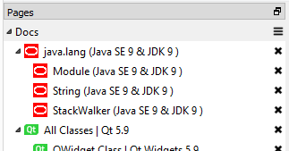
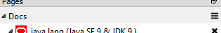
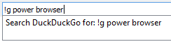
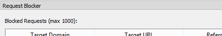
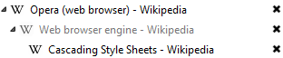

Overview
Doogie is a Chromium-based web browser with tree-style pages. It is built using CEF and Qt. The primary goal is to make a browser that functions more like an IDE. In an era where web browsers continually remove or hide UI, Doogie aims to make it more visible and allow easier cross-contextual browsing. Read the user guide or the FAQ.
Screenshot
{kind=link}
Features
Page Tree

The page tree allows easy navigation of pages via a tree view. It has features for opening child pages (foreground or background), suspension, fast closing gestures, etc. In addition to trees, pages can be organized in workspaces and bubbles.
Read more about the Page Tree
Bubbles

A "bubble" is a context a page runs within. Bubbles can have their own settings, including cache path, which allows you to do things like create an "incognito" bubble, or create separate bubbles with complete separate cookie sets to login to the same site as two different users side-by-side. Bubbles are identified by customizable icons and pages can easily be switched from one bubble to another.
Read more about Bubbles
Workspaces

A "workspace" is a named hierarchy of pages. They can be created, closed, deleted, moved around, and more. A workspace is a good way to quickly reopen a set of pages in a preferred hierarchy.
Read more about Workspaces
Autocomplete and Search

The address bar offers autocomplete suggestions based on previously opened pages. Also, DuckDuckGo is integrated where it will always appear as an option to search. Want to search for Google instead? Use DuckDuckGo's !bang support, and type "!g something" or "something !g" and using the search will perform a Google search. In fact, DuckDuckGo is the default autocomplete option any time a bang-form of search is typed.
Read more about the Address Bar
Request Blocker

Doogie supports the Adblock Plus filter syntax for URLs. This means you can add filter lists and Doogie will prevent the URL from being loaded.
Read more about the Request Blocker
Page Suspension

Pages in the tree can be suspended. This frees the resources the page is using and marks it as disabled. This can be helpful when you have many pages in a hierarchy but do not want all of them open and using resources.
Read more about Page Suspension
Not Yet Implemented
Many features are either not yet implemented or will never be implemented. See the GitHub issues. Some of the major ones are:
... and much much more. Most of these have to be complete before "beta". Contributions welcome.